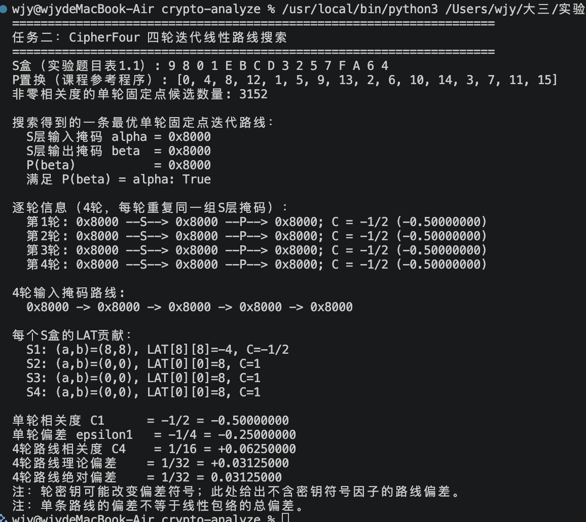
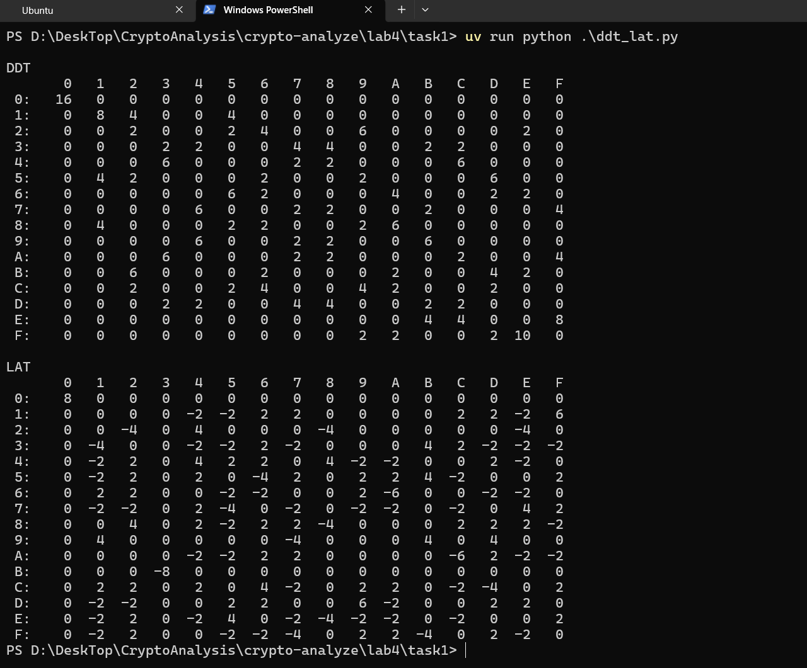

实验三、四：线性分析与自动化建模¶
来源：
密码分析学 / review/实验复习/03-线性分析与自动化建模.md
实验三把“线性偏差”落实为查表、掩码传播与路线计算；实验四把这些传播关系写成约束，再用求解器搜索多轮路线。最值得带进考试的能力是：能从表项算出概率和偏差，能写出一条排除约束，能复核程序输出的路线。
| 实验 | 实际完成的内容 | 对应理论 |
|---|---|---|
| 实验三 | 计算 LAT；搜索 CipherFour 四轮迭代路线；分析 PHILOX 一轮线性关系 | 线性分析 |
| 实验四任务一 | 用四种方法编码 DDT/LAT 非零位置，并枚举全部合法点 | 自动化区分器搜索 |
| 实验四任务二 | 搜索 CipherFour 六轮差分、线性路线，逐轮核对权重 | 差分攻击、线性分析 |
本文使用实验三、四共同采用的 S 盒，输入依次为 0 到 F：
1. 实验三：把 LAT、概率、偏差和相关度分清¶
设输入掩码为 \(a\)、输出掩码为 \(b\)，统计
实验代码保存的是偏差计数表：
对这个四位 S 盒，四种量的换算为：
Walsh 和则是 \(W=2\mathrm{LAT}\)，所以 \(C=W/16\)。看见 LAT 的数值，先确认它存的是哪种量。
| 掩码对 | LAT | 成立次数 \(N_0\) | 概率 \(p\) | 偏差 \(\varepsilon\) | 相关度 \(C\) |
|---|---|---|---|---|---|
| \((0,0)\) | \(8\) | \(16\) | \(1\) | \(1/2\) | \(1\) |
| \((8,8)\) | \(-4\) | \(4\) | \(1/4\) | \(-1/4\) | \(-1/2\) |
| \((B,3)\) | \(-8\) | \(0\) | \(0\) | \(-1/2\) | \(-1\) |
最后一行的含义是
对全部输入成立。负相关度表示等式更倾向于取 \(1\)，绝对值大的负相关同样是强线性关系。寻找强关系时按 \(|C|\) 排序，同时保留正、负 LAT 表项。
源码：LAT 计算。
2. 四轮迭代路线：为什么得到 \(1/32\)？¶
2.1 先让路线闭合¶
CipherFour 一轮由四个并行 S 盒与比特置换 \(P\) 组成。实验中 \(P\) 是 \(4\times4\) 比特矩阵的转置置换，满足 \(P=P^{-1}=P^T\)。
设 S 层输入掩码为 \(\alpha\)、输出掩码为 \(\beta\)。重复同一轮路线的条件是
程序枚举全部 \(2^{16}-1\) 个非零 \(\alpha\)，由 \(\beta=P^{-1}(\alpha)\) 唯一确定输出掩码，再计算四个 S 盒相关度的乘积。它得到 3152 个相关度非零的单轮固定点候选，选出的路线是
这里的 8000 为十六进制，只有最高半字节的掩码为 \(8\)，其余三个半字节为 \(0\)。
2.2 再计算路线贡献¶
每轮的四个局部掩码对为 \((8,8),(0,0),(0,0),(0,0)\)，因此
重复四轮后，不计密钥符号因子的这条路线相关度为
最容易算错的是直接相乘偏差。 单轮偏差是 \(-1/4\)，四个独立近似的偏差应为
而不是 \((-1/4)^4\)。用相关度相乘更省事。

图源：实验三报告中的固定点路线搜索结果，路线偏差为 \(1/32\)。
本程序搜索单轮固定点重复四次的路线，计算单条路线的贡献。完整头尾线性近似的相关度由连接相同头尾的全部路线合并得到。
3. PHILOX：先用结构消掉一半掩码¶
实验取 \(W=8\)、\(M=\mathtt{9B}\)，一轮为
其中 \(\operatorname{mullo}_8(R)\) 和 \(\operatorname{mulhi}_8(R)\) 是 \(R\times M\) 的低八位与高八位。这里采用实验三代码的轮函数；实验二的高、低字安排不同，两组结果分别对应各自的轮函数。
输入掩码 \(\alpha=(\alpha_L,\alpha_R)\)、输出掩码 \(\beta=(\beta_L,\beta_R)\) 对应的表达式为
若 \(\alpha_L\ne\beta_R\)，第一项是均匀输入 \(L\) 的非零线性函数，取 \(0,1\) 各一半，并与其他项独立，所以整个表达式平衡，偏差为零。
因此，搜索非零偏差只需考虑
这样就不用枚举所有 \(2^{16}\) 个输出掩码，只需枚举 \(\beta_L\) 的 \(256\) 种取值；每个候选再遍历 \(R\) 的 \(256\) 种取值。固定密钥项 \(\beta_R\cdot K\) 只翻转偏差符号。
实验在 \(K=0\) 时得到各组输入的第一名：
| 输入掩码 \(\alpha\) | 输出掩码 \(\beta\) | 偏差 |
|---|---|---|
| \((\mathtt{00},\mathtt{01})\) | \((\mathtt{01},\mathtt{00})\) | \(1/2\) |
| \((\mathtt{01},\mathtt{00})\) | \((\mathtt{5A},\mathtt{01})\) | \(-0.14453125\) |
| \((\mathtt{00},\mathtt{02})\) | \((\mathtt{03},\mathtt{00})\) | \(1/2\) |
| \((\mathtt{02},\mathtt{01})\) | \((\mathtt{B6},\mathtt{02})\) | \(0.17578125\) |
第一行还能直接手算：\(M\) 为奇数，\(R\times M\) 的最低位就是 \(R\) 的最低位，所以 \(R_0=L'_0\) 恒成立，偏差为 \(1/2\)。第三行来自 \(M\equiv3\pmod4\)，乘积低两位满足 \(L'_0=R_0\)、\(L'_1=R_1\oplus R_0\)，因此 \(R_1=L'_1\oplus L'_0\)。
源码：PHILOX 一轮线性分析。
4. 实验四：把一个 S 盒变成二进制约束¶
4.1 先固定符号和位序¶
沿用实验报告修改后的符号：传播变量用 \(x\)，非法点集用 \(Q\)。
\(V\) 是合法传播点集。差分建模取 \(\mathrm{DDT}[a,b]>0\) 的位置；线性建模取 \(\mathrm{LAT}[a,b]\ne0\) 的位置。该 S 盒有 72 个差分合法点、122 个线性合法点，都包含未激活的 \((0,0)\)。

本任务一的目标是准确描述全部合法点，目标函数设为 \(0\)；它没有按概率大小筛选路线。
4.2 四种方法分别在做什么？¶
one-hot：从合法点中选一个。 给每个 \(v\in V\) 一个二进制变量 \(\lambda_v\)，写
第一个等式选中唯一合法点，后八个坐标等式把它复制到 \(x\)。差分模型有 \(8+72=80\) 个变量、\(1+8=9\) 条等式。
逐点排除：与每一个非法点至少差一位。 对每个 \(q\in Q\)，写
例如 \(q=0000\,0001\) 是非法点，因为输入差分为零时输出差分必须为零。排除它只需
在 \(x=q\) 处左边为零；任意其他二进制点都至少有一项为一。这就是“恰好排除一个点”的证明。
逻辑化简：把多个非法点合并排除。 用 Espresso 将 \(Q\) 化成若干含通配位的逻辑立方体，每个立方体对应一条约束。这里只计算固定位置的汉明距离，通配位置不参与求和。例如，零输入、输出最高位为一的 0000 1--- 全部非法，可统一写成
这一条约束同时排除八个点。
凸包：用超平面围住合法点。 先求 \(\operatorname{conv}(V)\) 的等式和不等式，再限制 \(x\) 为二进制。其关键性质是
程序进一步贪心选取每次能排除最多剩余非法点的不等式，直到所有非法点均被排除。筛选后保留的是同一组二进制合法点。
4.3 怎样检查模型没有漏点或多点？¶
报告记录的结果如下，“变量/约束/解”分别表示二进制变量数、显式线性约束数、合法解数：
| 方法 | DDT：变量/约束/解 | LAT：变量/约束/解 |
|---|---|---|
| one-hot | \(80/9/72\) | \(130/9/122\) |
| 逐点排除 | \(8/184/72\) | \(8/134/122\) |
| 逻辑化简 | \(8/36/72\) | \(8/38/122\) |
| 凸包筛选 | \(8/32/72\) | \(8/28/122\) |
最直接的检查是遍历全部 \(256\) 个二进制点，逐点判断：
模型验证要逐点比较解集。 仓库中的凸包数据经筛选后得到 \(32/28\) 条约束，逐点枚举得到 \(72/122\) 个合法点，与 DDT/LAT 非零点集一致。
代码入口：公共 DDT/LAT、one-hot、逐点排除、逻辑化简、凸包筛选。
5. 六轮搜索：为什么程序显示 \(2^{-3}\)，重算却不同？¶
先核对搜索器怎样定义权重，再用 DDT/LAT 计算路线的概率与相关度。
5.1 差分路线：六个 \(1/2\) 相乘¶
平台找到六轮均为 \(\mathtt{0001}\to\mathtt{0001}\) 的 S 层差分路线。最低位在置换中保持不动，且 \(\mathrm{DDT}[1,1]=8\)，所以每轮一个活跃 S 盒贡献 \(8/16=1/2\)：
这条路线按 DDT 重算的概率与平台显示值一致。
5.2 线性路线：把每个非零 LAT 项重新乘一次¶
平台输出的六轮路线如下。表中的输出均为 S 层输出；前五轮还要经过 \(P\) 才到下一轮输入，第六轮末尾没有 \(P\) 层。
| 轮 | S 层输入掩码 | S 层输出掩码 | 该轮相关度绝对值 |
|---|---|---|---|
| 1 | DD0D |
9909 |
\((3/4)^3\) |
| 2 | D00D |
9009 |
\((3/4)^2\) |
| 3 | 9009 |
1001 |
\((1/2)^2\) |
| 4 | 0009 |
0001 |
\(1/2\) |
| 5 | 0001 |
000F |
\(3/4\) |
| 6 | 1111 |
FFFF |
\((3/4)^4\) |
查 LAT 得 \(C(D,9)=3/4\)、\(C(9,1)=1/2\)、\(C(1,F)=3/4\)，总共有十个 \(3/4\)、三个 \(1/2\)，所以
对应路线偏差绝对值为 \(|C_{\text{trail}}|/2\approx0.00351959\)，精确权重为
平台对局部权重采用向下取整：
于是 \(3/4\) 被记作权重 \(0\)，\(1/2\) 被记作权重 \(1\)。整条路线的内部权重就是
因此平台显示的 \(2^{-3}\) 是整数化目标对应的指标，该路线真实的相关度绝对值是 \(0.00703919\)。复习时应记住后者的查表乘积，并理解二者差异来自权重取整。
六轮路线逐轮满足 \(P(\beta_r)=\alpha_{r+1}\)。程序优化的是整数权重；按精确相关度寻找最优路线时，目标函数应使用精确权重。
来源：实验四任务二报告与推导、差分配置、线性配置、平台原始输出。
6. 做题时直接套用的解答顺序¶
- LAT 题： 写清计数表的定义，依次求 \(N_0\)、\(p\)、\(\varepsilon\)、\(C\)；保留正负号。
- 路线题： 核对 S 盒表项和轮间掩码连接，用相关度相乘，最后除以二得到偏差。
- 建模题： 定义 \(x,V,Q\) 与位序，选一种方法写约束，再证明合法点全部保留、非法点全部排除。
- 实验分析题： 对照程序实际搜索范围、目标权重和原始 DDT/LAT，说明数值怎样得到。
实验三报告勘误：\((B,3)\) 的相关度为 \(-1\)；PHILOX 的平衡性来自独立均匀项与剩余函数的异或，结论针对完整表达式。
复现与继续阅读¶
在仓库根目录运行以下标准库程序，即可复现表项、四轮固定点路线和 PHILOX 结果：
python3 labs/lab3/code/task1.py
python3 labs/lab3/code/task2.py
python3 labs/lab3/code/task3.py
python3 -m labs.lab4.code.task1.ddt_lat
实验四四种建模方法的全解枚举使用 Gurobi；逻辑化简还使用 PyEDA，重新生成凸包数据使用 SageMath。相关依赖见 任务一配置。六轮路线由课程实验平台求解，仓库保存了配置与原始输出。